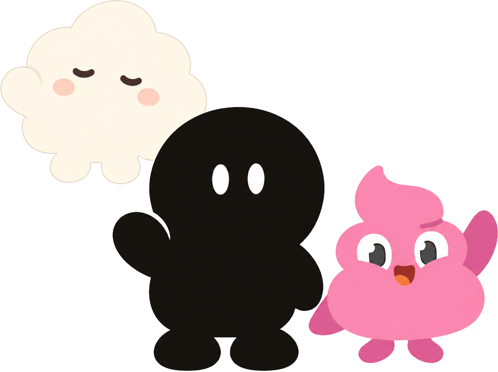

共通の表
名前と連絡先は大人のための面なので、前の A 案のまま。作った人（TsuzuKit のキャラ）・うんちくん・もくもくを、ChatGPT で1枚のまとまった絵にして右半分に置く

續橋 涼
Ryo Tsuzukihashi
iOS DEVELOPER & CREATOR
MAILryo.tsuzukihashi@tsuzukit.com
WEBtsuzukit.com
X@tsuzuki817
GITHUBtsuzukihashi

tsuzukit.com